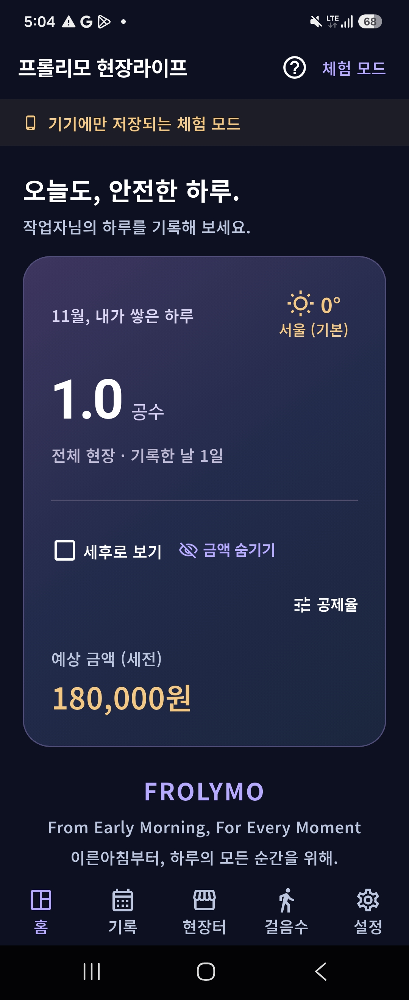

공수 기록
현장별 근무 이력·월별 예상 수입
일한 만큼,
빠짐없이.
현장으로부터, 일상으로.
출시 준비 중FIELD LIFE / 01
FROM EARLY MORNING
From Early Morning, For Every Moment
공수부터 현장 날씨, 동료들과의 일상까지.
현장에서 시작되는 하루를 위한 라이프 앱.
일한 하루가, 나의 기록이 되도록.
개발 중 · 출시 준비
현장별 근무 이력·월별 예상 수입
일한 만큼,
빠짐없이.
출근 전 살펴보는 날씨와 준비
출근 전,
오늘의 준비.
현장에서 필요한 물건과 이야기
동료에게
이어지는 쓸모.

말없이 쌓아온 시간과 고단한 발걸음을
소중하게 생각합니다.

사진은 현장의 일상을 표현한 브랜드 이미지예요.
THE NEXT CHAPTER
프롤리모 현장라이프의 정식 출시를 준비하고 있어요.
공식 다운로드 링크는 출시 후 이곳에 안내할게요.
LET’S TALK
서비스와 브랜드에 관한 문의를 보내 주세요.